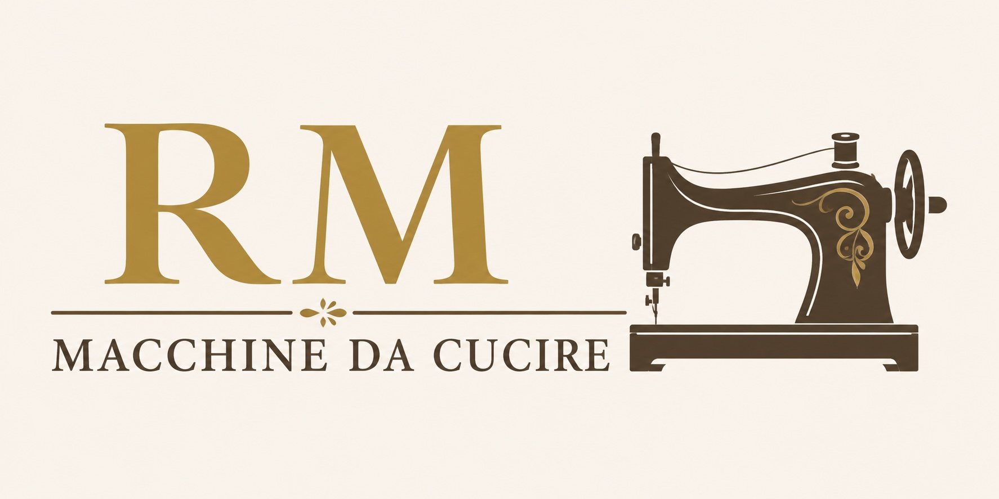

Oltre 30 anni di esperienza al servizio di chi ama il cucito.
RM Macchine da Cucire nasce dall'esperienza, dalla competenza e dalla passione di Roberto Maffioli, professionista del settore da oltre trent'anni.
La sua storia professionale affonda le radici nell'attività di famiglia, dove ha lavorato per molti anni insieme al padre e al fratello, maturando una conoscenza approfondita delle macchine da cucire domestiche, professionali e industriali.
Un percorso costruito giorno dopo giorno attraverso l'assistenza ai clienti, la manutenzione e la riparazione di migliaia di macchine, affrontando ogni situazione con serietà, precisione e attenzione ai dettagli.
Oggi Roberto continua questa tradizione mettendo a disposizione tutta la propria esperienza per offrire un servizio qualificato sia a chi cuce per passione sia a chi utilizza le macchine da cucire per lavoro.
Crediamo che ogni macchina da cucire debba poter esprimere al meglio il proprio potenziale. Per questo offriamo consulenza, assistenza e supporto tecnico personalizzato, aiutando ogni cliente a trovare la soluzione più adatta alle proprie esigenze.
La nostra filosofia è semplice: offrire un servizio competente, trasparente e professionale, costruendo con ogni cliente un rapporto basato sulla fiducia, sulla disponibilità e sulla qualità del lavoro svolto.
Oltre tre decenni di lavoro nel settore delle macchine da cucire.
Interventi accurati, consulenze competenti e assistenza qualificata.
Un rapporto diretto e trasparente con ogni cliente.
In oltre trent'anni di attività abbiamo assistito generazioni di appassionati di cucito, artigiani, sartorie e professionisti del settore, diventando un punto di riferimento a Torino per la vendita, l'assistenza e la riparazione delle macchine da cucire.
L'esperienza maturata negli anni ci permette di intervenire con competenza su numerosi marchi e modelli, garantendo diagnosi precise, interventi accurati e soluzioni affidabili.
Vi aspettiamo nel nostro punto vendita per consigliarvi e aiutarvi a trovare la soluzione migliore per le vostre esigenze.
📍 Via San Secondo 86 - Torino
📞 +39 349 211 1248
🕒 Lunedì - Venerdì 08:30 - 18:30